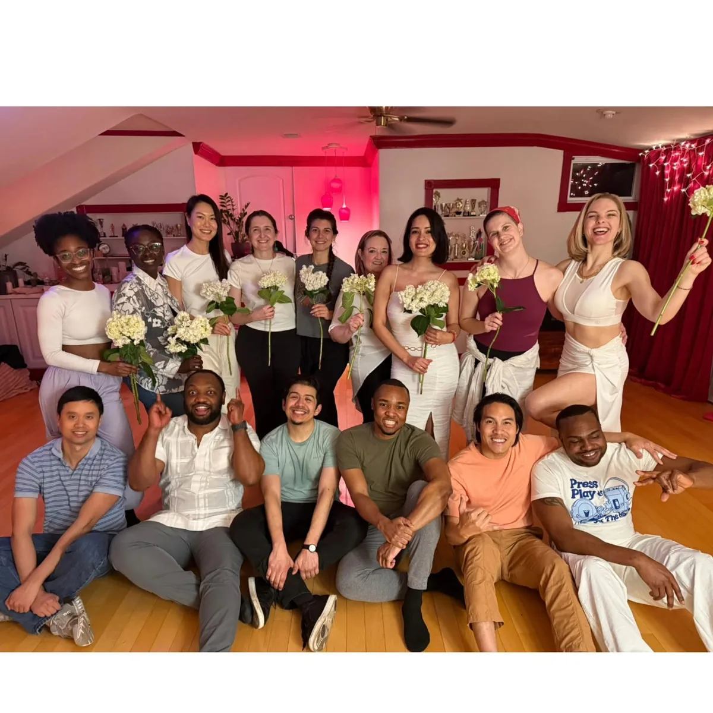
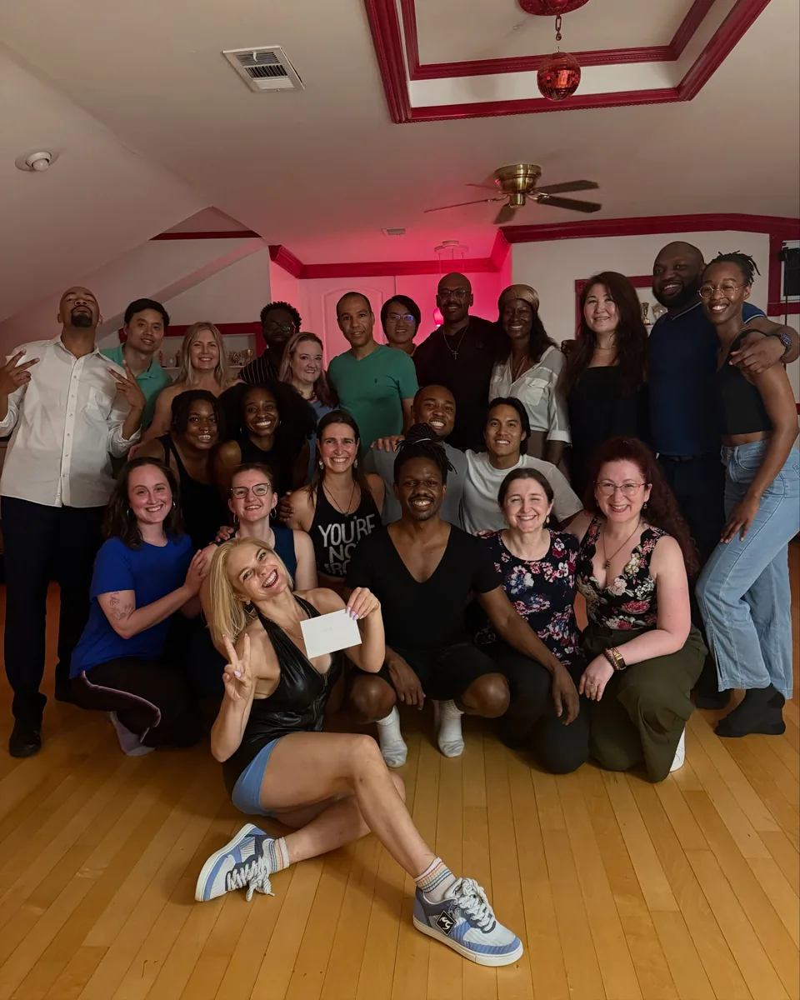
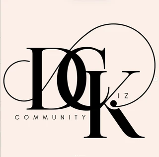

Every Monday · Kbird DC · In collaboration with @dc.kiz.community
A warm, weekly home for Urban Kiz in the DC community. A themed class + a proper social — every Monday at Kbird DC. No partner, no experience needed.
The Dance
A modern, expressive dance born from Kizomba — where the classic African embrace meets sharp musicality, urban rhythm, and creative freedom.
Every Monday we gather to grow the dance together — one themed class, one long social, and all the space to move at your own pace. Whether it's your first Monday or your fiftieth, you're home here.
Walk-ins welcome · No partner needed
Weekly class topics posted on @hartofzouk
The Floor
A room full of smiles, embraces, and the quiet magic of showing up every Monday.


In Collaboration With
The Urbankiz Guild

DC.Kiz.Community